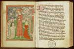
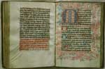
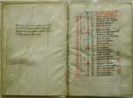

Dagelijks geloof
Vrouwen en religie in de laatmiddeleeuwse stad
|
|

| 1. | Vrouwen in de stad | |
| 2. | Kluizenaressen | |
| 3. | Begijnen |
1. Vrouwen in de stad
Drie voorbeelden van de betrokkenheid van vrouwen bij handschriften met vrome teksten: een verzameling teksten die waarschijnlijk is samengesteld door een vrouw, die aan de hand van haar materiaal als geestelijk leidster optrad (1.1); een getijdenboek uit het bezit van een vrouw die het handschrift zelf gekopieerd had (1.2); een getijdenboek uit het bezit van een vrouw die het handschrift als geschenk va haar oom had gekregen (1.3).
|
1.1 || Leesbibliotheek voor religieuze in één band. [BPL
2473] Verzamelhandschrift uit Tienen, 2e helft 15e eeuw, vanwege de omvang bijgenaamd de “dikzak”, met traktaten, gebeden, gedichten, exempelen en andere religieuze teksten. Het handschrift is vermoedelijk aangelegd door de religieuze vrouw, die links op de miniatuur knielend voor staande Christusfiguur wordt voorgesteld; tekststroken met tekst in twee kleuren. Christus: Ic nemt al te dancke, eest cropel ofte manc, alle die van goeden wille sijn;. linker vrouw: Ic offer u heer been ende merch; dat is gherey ende erf; rechter vrouw: Here sterket minen goeden opsat ende nemet dese vrucht wt desen vat. |
|  |
1.2 || Getijdenboek van Wijburch Gherijtsdr. [LTK 294] Getijdenboek, perkament, 4e kwart 15e eeuw, eigendom van en geschreven door zuster Wijburch Gherijtsdr. Getoond wordt het begin van de Getijden van Maria (f.136r). |
|  |
|
1.3 || Getijdenboek van Margriete Claesdr. [BPL 2782] Getijdenboek, 1481, met aantekening van de oorspronkelijke eigenaar, de Leidse stadssecretaris Jan Philipsz. >Blijkens de inscriptie heeft Jan Philipsz. het boek geschonken aan zijn nicht Margriet Claesdr.: Dit boeck hoort toe Johannes Philipsz secretarus van Leyden. Ende hi heeftet ghegeuen Margriete Claesdr sijn nicht tot een testament |
|  |
| vorige pagina | volgende pagina |